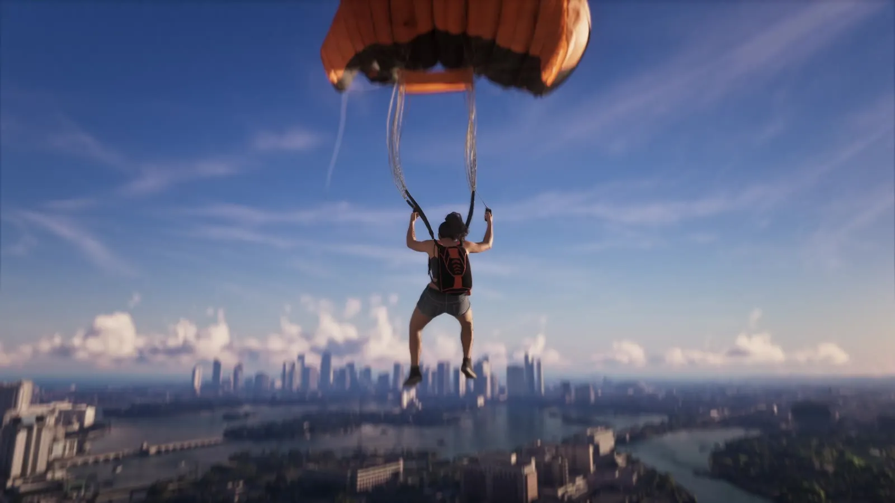
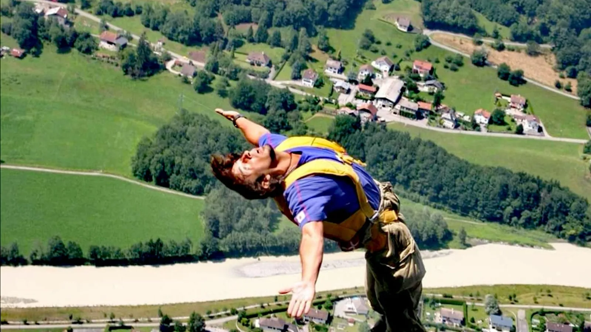
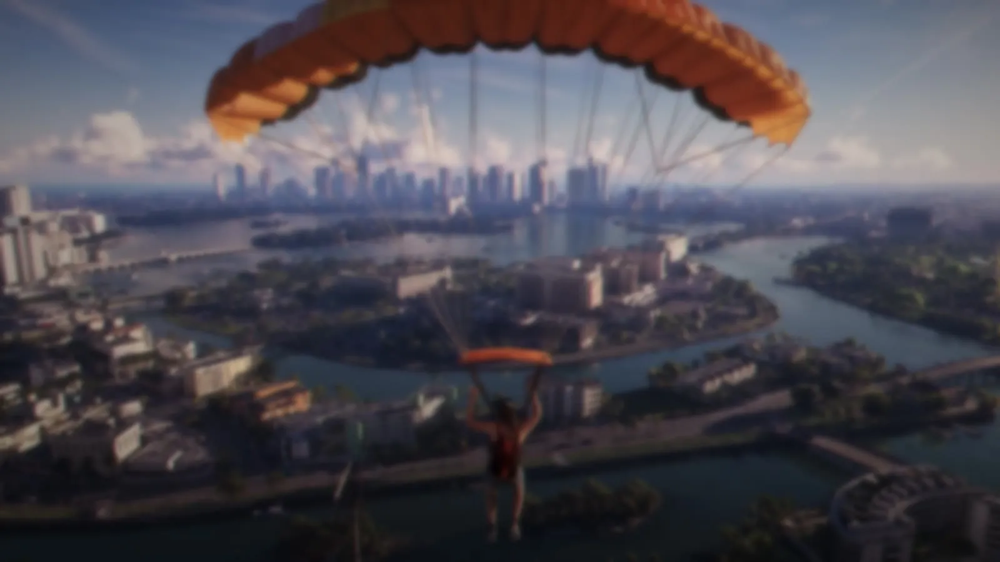

Парашют над Вайс-Сити в GTA 6 и бейсджампинг
Опубликовано:
Прыжок с высоты и прямоугольный купол-крыло показаны так, как это выглядит у настоящих парашютистов. Откуда именно прыгает героиня, Rockstar не уточняет.


- В «Расширенном показе» GTA 6 девушка с ранцем стоит на площадке высоко над Вайс-Сити и прыгает вниз.
- В воздухе раскрывается оранжевый прямоугольный купол-крыло.
- Прыжки с парашютом с неподвижных объектов называют бейсджампингом: BASE — buildings, antennas, spans, earth (здания, антенны, мосты, скалы).
- Отцом бейсджампинга считают американца Карла Бениша: в 1978 году он с группой прыгнул с Эль-Капитана.
- Многосекционный купол-крыло запатентовал изобретатель Домина Жальбер в 1963 году.
Что в игре
Около 18:48 «Расширенного показа» девушка с ранцем за спиной стоит на площадке с перилами высоко над городом и прыгает вниз. Камера летит за ней: под ногами — каналы, острова и небоскрёбы Вайс-Сити.
Затем раскрывается купол — не круглый, а прямоугольный оранжевый купол-крыло. Героиня держится за стропы и медленно спускается к островам у центра города.

Что в реальности
Прыжки с парашютом не с самолёта, а с неподвижных объектов называют бейсджампингом. Как пишет CNN, BASE — это сокращение: buildings, antennas, spans, earth — здания, антенны, пролёты мостов и земля, то есть скалы.
«Отцом» бейсджампинга считают американца Карла Бениша. В 1978 году он с группой парашютистов прыгнул с вершины Эль-Капитана в Йосемити — скалы высотой почти 3 000 футов. В 1984 году Бениш погиб во время прыжка со скалы Тролльвеген в Норвегии.
Прямоугольный купол, как у героини, — изобретение Домины Жальбера. По данным Зала славы парашютного спорта (Skydiving Museum), он разработал многосекционный купол и запатентовал его в 1963 году, а в 1964-м — «крыло» Para-Foil. Такие купола наполняются набегающим воздухом (ram-air) и, как отмечает музей, изменили и сделали массовым парашютный спорт. Жальбер умер в июне 1991 года в возрасте 86 лет.
По данным канадского музея Ingenium, парафойл Жальбера уже в 1960-х использовало Бюро погоды США, изучая взаимодействие моря и атмосферы в районе Майами.
Совпадает и отличается
| Реальность | GTA 6 | |
|---|---|---|
| Прыжок с высоты без самолёта | Бейсджампинг: здания, антенны, мосты, скалы | 🟢 Прыжок с площадки над городом |
| Купол | Прямоугольный купол-крыло (ram-air) | 🟢 Оранжевый прямоугольный купол |
| Откуда прыжок | — | 🔵 Площадка с перилами; что это за здание, не видно |
Источники: Rockstar Games — «Grand Theft Auto VI: An Extended Look» (18:48–18:58); CNN, 14.01.2016 — «Sunshine Superman»: Carl Boenish and BASE jumping; Skydiving Museum & Hall of Fame — Domina C. Jalbert; Ingenium (Канада) — «Imagination is the highest kite one can fly», ч. 2; Wikimedia Commons — фото Abudunia (CC0).
Реальные фото: Фото: Abudunia, CC0 · Wikimedia Commons. Кадры игры: Rockstar Games.
Каждый день — одно сравнение: кадр игры рядом с реальным фото. Подписывайтесь:
YouTubeInstagramTikTok
 vs
vs
 vs
vs